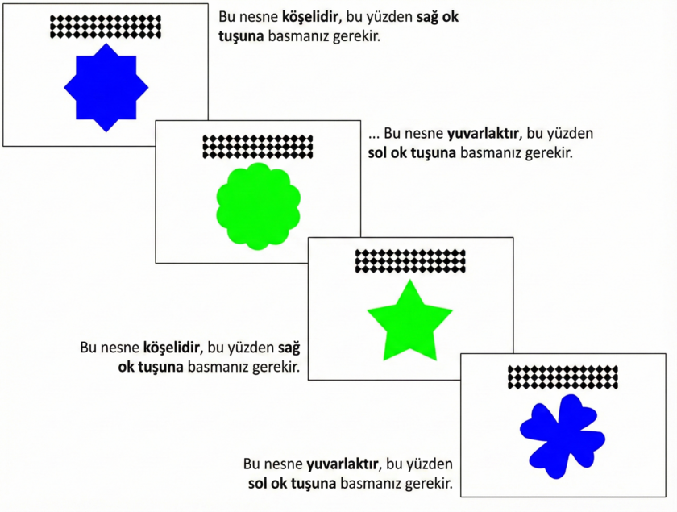

Testin sonraki bölümünde, nesneleri tekrar şekillerine (yuvarlak/köşeli) göre sınıflandırmanız gerekecek. Aşağıdaki örnek prosedürü göstermektedir:

Bir sonraki sayfaya geçmek için lütfen sağ ok tuşuna basın.